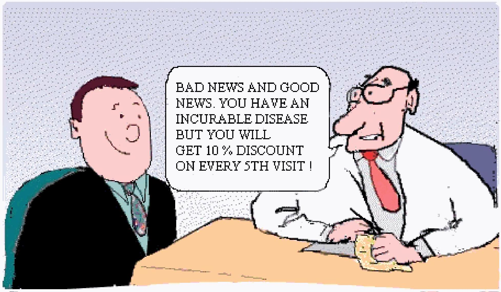

Non-verbal Communication
Mon-ver'bel consusnunicention
Write a self-reflection on your experience. Include the following:
- Was it difficult? Why?
- Did anyone emerge as a leader? Who and what did they do?
Nonyerbal Consmunication
Objectives:
- Characteristics of nonverbal communications
- How physical behaviors affect communication
- How touch is an important means of communication
Essential Questions"
- What are the characteristics of nonverbal communication?
- Why is nonverbal communication important in health care?
- How does touch affect communication with the patient?
Nonver'day Consusulusication
All messages that are not expressed as words:
- Physical behaviors: any movement of face, hands, feet, trunk, or other body parts that communicate a message
- Facial expressions
Eye contact
Posture and gait
- Gestures
Vocal behaviors: reinforces the meaning of the message characteristics of voice
- Pitch
- Range of voice
- Volume
- Rate/pace
Quality
Space: the amount of distance put between a person and others sends strong messages about thoughts and reactions
- Personal distance: 18" to 4 ft
- Social distance 4-12 ft
- Influences
- Status
- Culture
- Content of interaction
- Gender
- Age
Touch: one of the most personal & powerful means of communication
- http://www.youtube.com/watch?v=2SpfXZf6bm4
- Essential in healing process
- Kind & amount that is appropriate varies with culture, family background, age, gender
- Meaning of touch depends on type, situation culture and who is doing touching
- Touch avoidance
Nonverbal message used to accomplish social functions:
- Relationship status
- Emotions
- Enhancing persuasive power
- Achieving understanding
- Regulating conversations
Adds to verbal interactions
Characteristics of nonverbal communication
- Primary means of expression
- Constantly occurring
- Dependent on context
- More believable than verbal communication
The End
